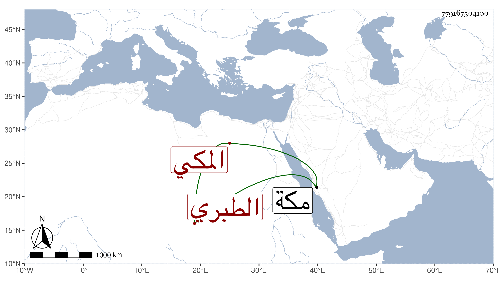

0902Sakhawi.DawLamic.ITO20230111-ara1.EIS1600.779167504100
Biography ID: 779167504100
353
عبد الواحد بن الزين محمد بن الزين أحمد بن الجمال محمد بن المحب أحمد بن عبد الله أوحد الدين أبو محمد الطبري الأصل المكي ، وأمه حبشية فتاة أبيه . ولد في شوال سنة ثمان وسبعين وسبعمائة واعتنى به أبوه فحفظه القرآن واحتفل لصلاته به عند ختمه بوقيد المسجد والشموع وسمع من أبيه أشياء ، وأجاز له النشاوري وابن حاتم وإبراهيم بن علي بن فرحون والمحب الصامت وأبو الهول الجزري والتنوخي والعراقي والهيثمي وآخرون وناب في الإمامة بالمقام وكان ماهرا في قراءته كأبيه مع التعبد بالطواف . مات في جمادى الأولى سنة سبع وعشرين بمكة رحمه الله .
